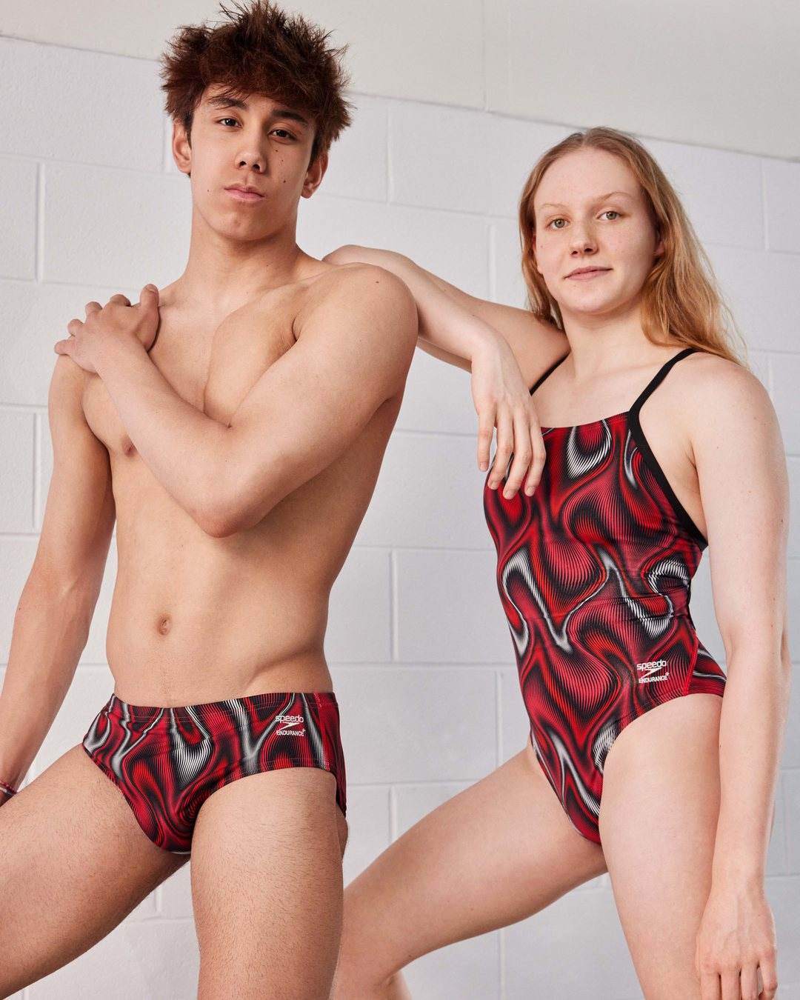
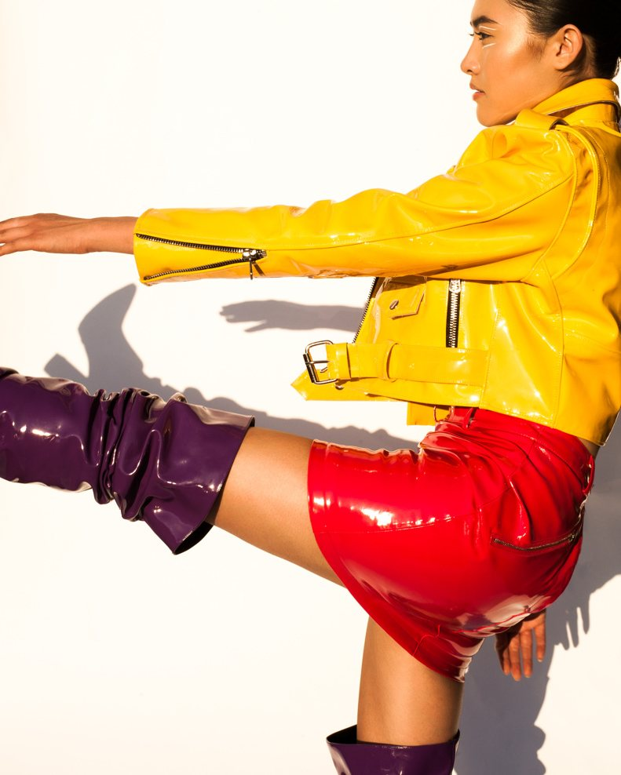
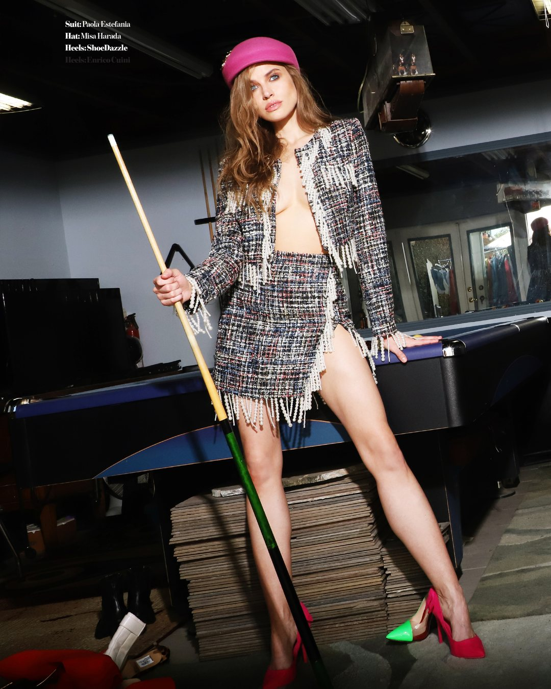
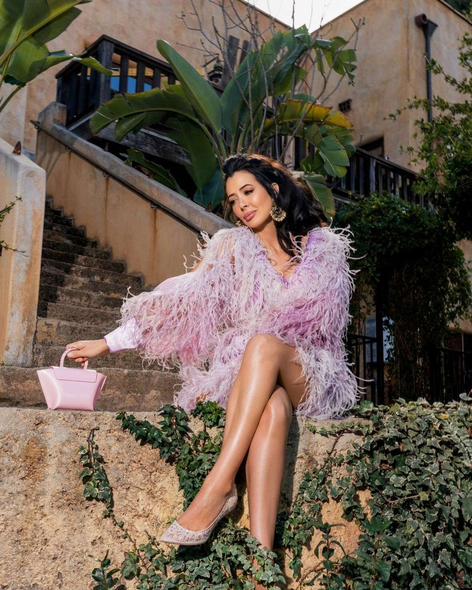

01Enterprise · Visual strategy
Making an everyday brand feel intentional
I keep the specifics generic out of respect for my employer. Happy to say more with approval.
Work
Not galleries — cases. For each one: the problem I walked into, the story we had to tell, the calls I made, and what came out the other side. The pictures are proof. The thinking is the point.

I keep the specifics generic out of respect for my employer. Happy to say more with approval.



Selected styling archive
Celebrity, red carpet, editorial, commercial. It's here so you know the opinions are earned — I've done the work they're built on.


Full archive available on request.
Creative direction, visual strategy, and campaign work for brands and agencies.
Start a project →